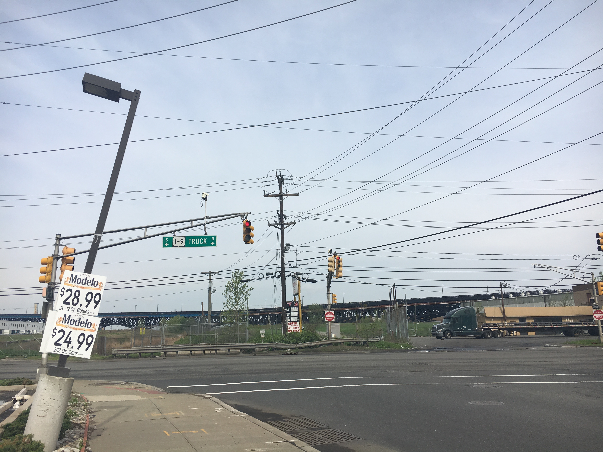
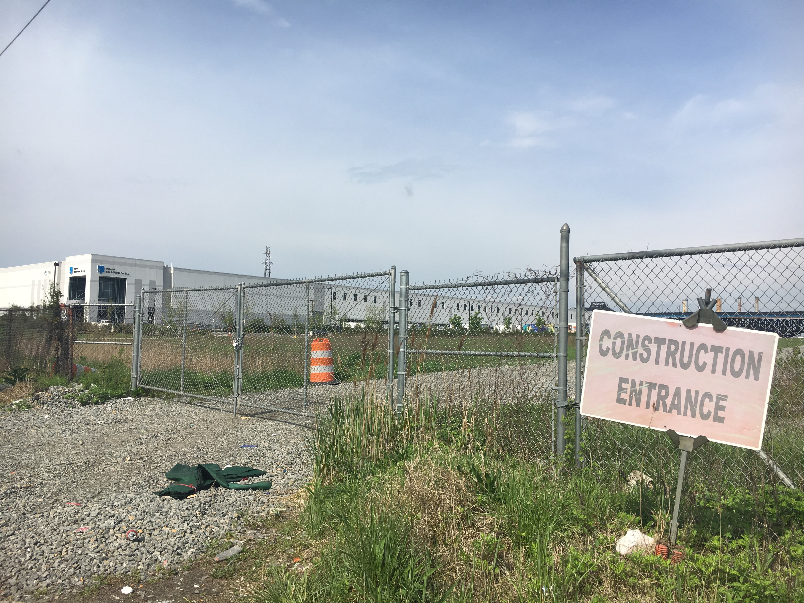
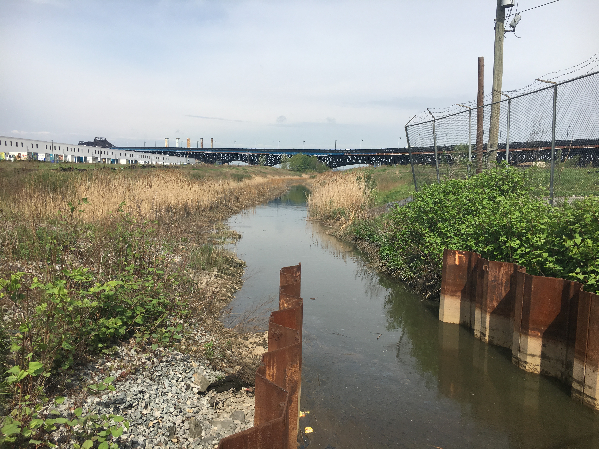

Nearly three miles west of the budding skyscrapers and luxury apartment complexes that mark Jersey City’s downtown area sits a large expanse of land full of hazardous chemical waste. Overgrown and unassuming, the spot is surrounded by evidence of construction efforts on all sides, a scene made commonplace here on Route 440. The road meanders through the relics of the city’s industrial past: abandoned gas stations, repurposed warehouses, and anonymous smokestacks abound. This is the PJP Landfill, a designated Superfund site.
The PJP Landfill sits on the other side of Route 440, under New Jersey's busy Pulaski Skyway.
The clean up efforts currently underway at the PJP Landfill are being conducted by the Environmental Protection Agency, who is responsible for funding and overseeing the nationwide Superfund program, an initiative that ensures the remediation of sites deemed hazardous to human life in surrounding communities. New Jersey is home to 114 registered Superfund sites, the highest amount in the country.
When President Trump announced a federal budget plan earlier this year that proposed a 31% cut in funding to the EPA, many New Jersey residents feared that the sites under the agency’s remediation would be left to languish. This month’s congressional budget compromise, however, revealed that the EPA would only be seeing a 1% cut in federal funding for this fiscal year, a far cry from the near-inoperable conditions that the original plan would have ensured. But few are breathing a sigh of relief just yet, made wary by the Trump administration’s track record for showing low levels of concern for environmental issues.
“We can see pretty clearly where this administration is headed,” said Greg Remau, the Deputy Director of the New York/New Jersey Baykeeper, a non-profit organization that works to protect, preserve, and restore the area’s water bodies. “As projected, the Superfund cleanups would slow down at best, but most would probably stop. Regulations for water testing in general would probably not be enforced - you can have a law on the books but if nobody’s out there enforcing it, it doesn’t really do anything.”
Construction has officially been completed at the PJP Landfill Superfund site, but monitoring of the groundwater is ongoing.
In addition to the industrial ghosts of New Jersey’s past, the state’s high number of Superfund sites can be traced back to the very inception of the program in the 1980s, when New Jersey government officials actively pursued and identified contaminated areas with the intention to have them registered.
“We’re an industrial state, we’re a densely populated state, and to our credit, we’ve actually gone after and located and listed those sites as opposed to letting them sit there and not dealing with them,” said Remau.
As it turns out, letting sites like the PJP Landfill just sit there can have some pretty dangerous consequences; contaminants can leech into the ground water and tainted soil can be moved from one place to the next, polluting resources in the communities that surround these locations. There is also a more indirect danger in leaving these areas unattended, something Remau referred to as bioaccumulation, or allowing contaminants (heavy metals, chemical wastes, mercury) to make their way into the food chain system, kicking off a long trail of biological damage.
According to Elias Rodriguez, a Public Information Officer at the EPA, all construction efforts at PJP have been completed, and Jersey City is currently conducting an environmental investigation of the area with the ultimate goal of turning it into a green space and park. Monitoring of the ground water is ongoing, however, requiring that the site remain fenced off and isolated from the public. In fact, most of the residents who share the neighborhood with the site weren’t even aware of its existence.
“Anything that’s bad for kids, bad for the environment, it needs to be cleaned,” said Zain Khan, whose family lives just down the street from PJP.
“[Trump] is more of a businessman who doesn’t care about the environment and more about his bank account,” his neighbor, Fwad Din, added.
In regard to the potential defunding of the EPA, something that became less of a threat under this month’s congressional budget compromise, Mira Prinz-Arey, a member of Jersey City’s Citizen Advisory Board, shared the locals’ frustration: “It’s a horrible idea,” she said, “We were a big industrial city and we have a lot of chromium in the soil. To cut funding to the agencies working to remediate that problem is a bad idea.”
Some lawmakers, however, have been quite vocal in their support of President Trump’s initial budget plan for the EPA, including Senator John Barrasso of Wyoming, who lauded the President’s pledge to allow individual states to manage their own environmental regulations, cutting back on the federal agency’s overreach.

Evidence of the gas station that used to occupy part of the PJP Landfill property.
“I applaud President Trump for taking action on behalf of America’s families and energy workers,” he said in an official statement, “Federal agencies will now have the opportunity to identify ways to improve the environment without hurting job growth.”
But for those who live in potentially hazardous environments, allowing state government to deal with the matter independently may not be sufficient. In 1995, Corinne Mulrenan was forced to move out of a former tool and dye factory that had been converted into residential loft spaces in Hoboken, a city directly adjacent to Jersey City. When puddles of mercury were discovered beneath the floorboards by a fifth-floor resident (and later throughout the building, at levels exceeding legal limits by nearly 1,000 times), the EPA stepped in. They took control over the building and its adjacent parking lot, determining that the entire property was in need of an extensive clean up and reconstruction.
“As much of a nightmare as it was,” said Mulrenan, “the EPA saved our proverbial asses, in every sense.”
When Mulrenan, along with several other families and artists, bought the building in 1993, New Jersey state officials we required to perform research on the property’s condition in the past 40 years, not to the time that the building was constructed. In their research, officials only saw the structure as a tool and dye factory, not as the General Electric mercury vapor lamp factory that occupied the space throughout the early part of the twentieth century. They okayed the project.
“When Trump’s budget plan came out,” said Mulrenan, “the first thing I thought of was thank God he wasn’t president when we were going through that.”
Now, with 114 registered Superfund sites throughout the state, New Jersey lawmakers are being pushed to support the efforts of the EPA, a position that many residents believe would be in their own best interest. Where Superfund sites have reached a status of full remission, Remau said, they attract redevelopment, the maintenance of open space, and vibrant communities. Areas that remain in decay, however, have low property values and restrict the use of natural waterways.
Part of the Hackensack River that runs through the PJP Landfill Superfund site.
While he remains concerned about the future of the EPA, Remau has placed a lot of faith in the capabilities of his community to enact change. “It’s really astounding to me how engaged and active Jersey City is compared to some other cities, very few of whom are focused on the environment,” he said, “That’s what’s always struck me about Jersey City, that’s why it’s one of my favorite places to be.”